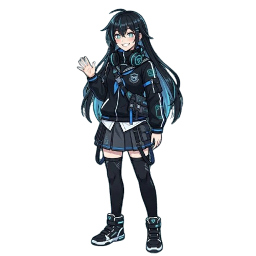

AI의 차가운 논리를 넘어서, 당신만의 프롬프트로 진심을 전달하세요. 4단계의 프롬프트 엔지니어링 미션을 완수하고 해피엔딩을 맞이할 수 있을까요?

철저한 논리 중심의 도서부원. 감성적인 대화를 극도로 꺼려함.
원칙과 규율을 중시하는 선도부장. 빈틈없는 성격의 소유자.
좋은 프롬프트는 4가지 요소로 이루어집니다. 모두 구체적으로 채워야 AI를 깨울 수 있어요.
AI가 어떤 존재로서 말할지 정의하세요
어떤 배경과 상황인지 구체적으로 설명하세요
AI에게 무엇을 하게 할지 명확히 지시하세요
말투, 길이, 출력 형태를 지정하세요
💡 Few-shot 원리
좋아하는 장소·분위기·상황을 예시로 3개 이상 알려주세요. 구체적일수록 좋아요.
💡 Temperature 원리
"온도를 조절하면 대사가 변합니다..."
💡 Chain of Thought 원리
지금까지 배운 모든 기법을 단계별로 연결해 왜 이 과정이 의미 있었는지 설득하세요. 최소 2단계 이상, 각 단계가 다음 단계의 근거가 되어야 합니다.
구성 가이드 — 지금까지의 여정 총정리
💡 Negative Prompt 원리
사과할 때 절대 쓰면 안 되는 말이나 행동을 정의하세요. 콤마로 구분해 여러 개 입력 가능합니다.
빠른 추가
성공적으로 프롬프트를 주입했습니다.
"여기에 모범 프롬프트 예시가 표시됩니다."

축하합니다! 당신의 프롬프트가 그녀의 마음을 완벽하게 열었습니다.
총 시행착오 횟수: 0회
⚠️ 복사 행위가 감지되어 창의성 등급이 하락했습니다.
시뮬레이션의 모든 데이터가 집약된 마스터 프롬프트입니다. 실제 AI 모델에 사용해보세요.
클리어한 씬이 저장됩니다
앱을 더 재미있게 만들기 위한 당신의 아이디어를 들려주세요.
작성하신 소중한 의견은 노션 데이터베이스로 직접 전달되어
앱 개선에 큰 힘이 됩니다. 감사합니다! ✨